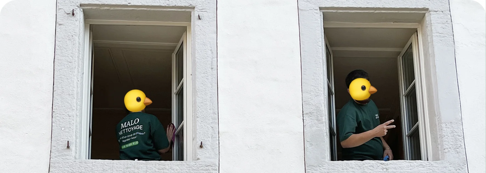

- 3 critères non négociables : assurance RC Pro, devis écrit fixe, garantie retour gratuit
- Délai idéal : réserver 1 à 2 semaines à l'avance pour une fin de bail
- Piège fréquent : les devis "à partir de" sans visite ni photos
- Signal local : une entreprise qui connaît les régies de la Broye
- Vérification rapide : numéro IDE visible sur le devis et avis Google récents
Pourquoi le choix d'une entreprise locale change tout
Une entreprise basée à Payerne ou en Broye connaît les exigences des régies de la région. Ce point fait toute la différence le jour de l'état des lieux.
Les contrôles des régies varient d'un canton à l'autre. À Vaud, les caissons de hotte et les joints silicone sont systématiquement vérifiés. Une équipe locale a vu passer ces contrôles régulièrement et sait où porter l'effort en priorité.
La réactivité compte aussi. Un prestataire à 15 minutes de chez vous peut revenir gratuitement le lendemain si la régie signale un point. Un prestataire éloigné facture souvent un déplacement supplémentaire ou repousse l'intervention.
Les 5 critères pour évaluer une entreprise de nettoyage
1. L'assurance responsabilité civile professionnelle
Un agent de nettoyage manipule vos appareils, vos surfaces, parfois vos objets personnels. Sans assurance RC Pro, le moindre incident reste à votre charge.
Malo Nettoyage — votre entreprise de confiance en Broye
58 sur 58 états des lieux validés · +200 interventions
Demander un devis gratuit →Demandez le nom de l'assureur. Une réponse claire (AXA, La Mobilière, Zurich) est un bon signe. Une réponse floue est un drapeau rouge.
2. La garantie retour gratuit
C'est le critère qui sépare les entreprises sérieuses des autres. Une garantie écrite "si la régie refuse, on revient gratuitement" engage le prestataire sur le résultat, pas seulement sur le temps passé.
Sans cette clause, vous risquez de payer deux fois en cas de problème.
3. Un devis fixe, écrit, après photos ou visite
Un devis "à partir de 150 CHF" sans information sur votre logement n'a aucune valeur contractuelle. Une entreprise sérieuse demande la surface, le nombre de pièces et idéalement quelques photos avant de chiffrer. Le prix annoncé doit être celui facturé, sans suppléments cachés.
4. Les avis Google vérifiables
Cherchez le nom de l'entreprise sur Google Maps. Une note élevée avec un volume d'avis suffisant est un bon indicateur. Lisez les avis négatifs en priorité : ils révèlent comment l'entreprise réagit face à un client mécontent.
5. La connaissance locale des régies
Posez la question directement : "Avez-vous déjà travaillé avec [nom de votre régie] ?" Une réponse précise, illustrée d'exemples, indique un acteur local crédible.

Combien coûte un nettoyage à Payerne en 2026 ?
Les prix varient selon la prestation et l'état du logement. Voici les fourchettes généralement observées sur le marché suisse romand :
| Type de prestation | Fourchette indicative | Détails |
|---|---|---|
| Fin de bail (2.5 pièces) | 450 – 700 CHF | Vitres comprises, garantie incluse |
| Fin de bail (4.5 pièces) | 700 – 1'100 CHF | Selon état et options |
| Nettoyage de vitres (maison) | 200 – 450 CHF | Intérieur + extérieur |
| Fin de chantier (par m²) | 5 – 9 CHF/m² | Selon poussières et résidus |
| Nettoyage régulier bureaux | 40 – 60 CHF/heure | Forfait mensuel possible |
Les pièges à éviter avant de signer
Trois situations reviennent régulièrement chez les clients qui font appel à nous en rattrapage :
- Le devis téléphonique sans écrit : aucune trace, aucune preuve, aucun recours possible
- Le tarif horaire sans plafond : la prestation s'étire, la facture aussi
- L'absence de TVA et de numéro IDE sur la facture : signe d'une activité non déclarée, donc sans assurance valable
Une entreprise transparente vous remet un devis PDF avec coordonnées complètes, numéro IDE (CHE-xxx.xxx.xxx), conditions générales et délai de validité.
Les prestations les plus demandées dans la Broye
Quatre types de prestations dominent les demandes dans la région de Payerne :
- Fin de bail — déménagements vers/depuis Payerne, Avenches, Estavayer
- Nettoyage de vitres — maisons individuelles et commerces
- Fin de chantier — rénovations et constructions neuves
- Nettoyage régulier — bureaux, cabinets, locaux commerciaux
La fin de bail reste la prestation la plus demandée. La maîtrise des standards des régies locales est donc devenue le premier critère de choix pour les habitants de la Broye.
Comment se passe une première intervention
Le processus d'une entreprise sérieuse à Payerne suit toujours les mêmes étapes :
- Contact par téléphone, email ou formulaire — réponse sous 24h
- Devis personnalisé sur la base de la surface et de photos
- Validation écrite par le client avant intervention
- Intervention avec matériel et produits fournis
- Contrôle final ensemble ou par photos
- Garantie activée si la régie signale un point
FAQ – Entreprise de nettoyage à Payerne
Combien de temps à l'avance réserver ?
Comptez 1 à 2 semaines pour une fin de bail standard, et 3 à 4 semaines en haute saison (fin juin, fin septembre). Pour les urgences, certaines entreprises locales gardent des créneaux disponibles à 48h.
Faut-il être présent pendant l'intervention ?
Non. La plupart des clients confient les clés. Un état des lieux photo avant/après suffit pour valider la prestation. C'est même recommandé pour ne pas gêner le travail des équipes.
Une entreprise de nettoyage doit-elle être inscrite au registre du commerce ?
Oui, toute société active en Suisse doit posséder un numéro IDE (CHE-xxx.xxx.xxx). Vérifiez sa présence sur le devis ou la facture. Une absence est un signal clair d'activité non déclarée.
Que faire si je ne suis pas satisfait du résultat ?
Une entreprise sérieuse propose une garantie retour gratuit, généralement valable 48 à 72h après l'intervention. Signalez le problème par écrit (email ou WhatsApp) avec photos à l'appui.
Les produits utilisés sont-ils dangereux pour les enfants ou les animaux ?
Les entreprises modernes utilisent majoritairement des produits écologiques certifiés, sans danger une fois secs. Demandez confirmation lors du devis si c'est un point sensible pour vous.
En résumé
Choisir une entreprise de nettoyage à Payerne demande de vérifier trois choses : assurance RC Pro, devis écrit fixe et garantie retour gratuit. Le prix seul n'est pas un bon indicateur — la transparence et la connaissance locale comptent davantage. Une équipe ancrée dans la Broye connaît les régies, les exigences et les délais, ce qui change tout le jour de l'état des lieux.